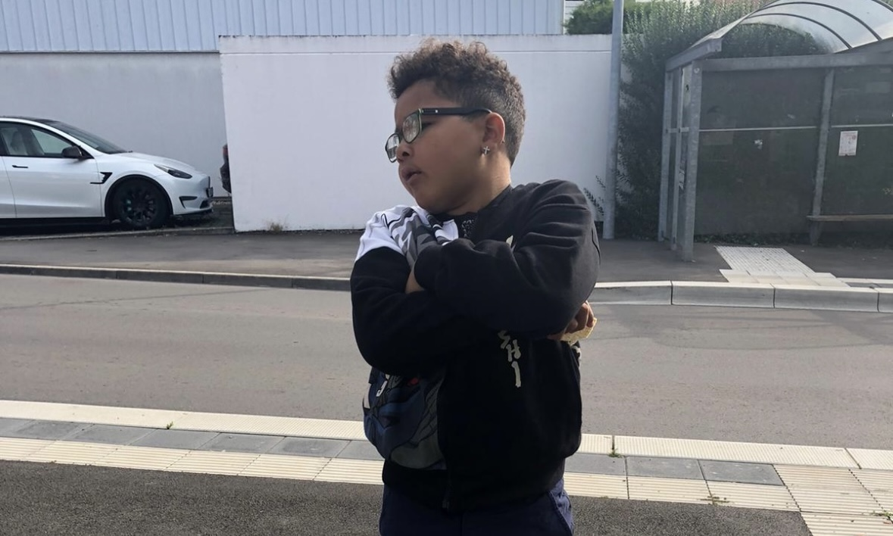
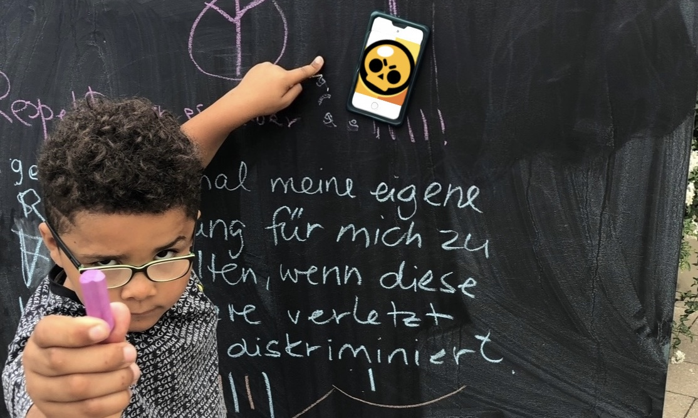
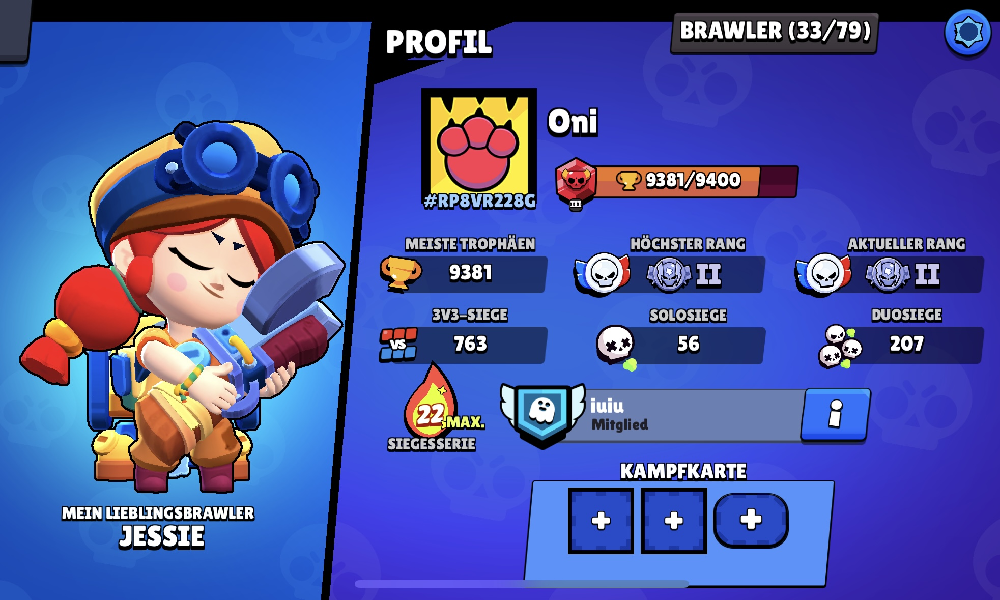
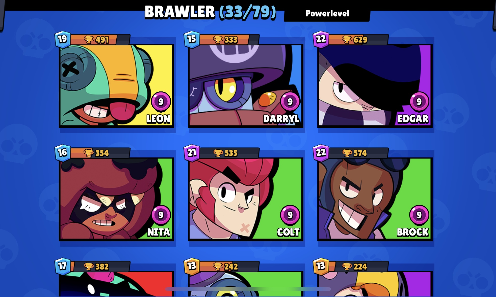
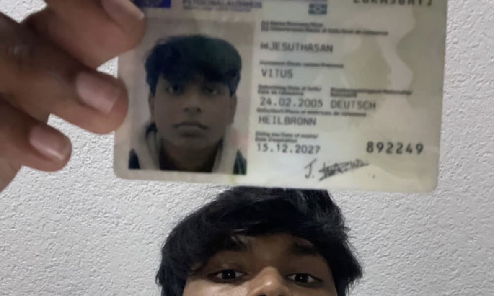

Der Kindergarten-Star, der Brawl Stars DOMINIERT!
Christopher Uguwug ist ein lebhafter Junge im Kindergartenalter, der in der kleinen Gemeinde Freudental lebt. Er besucht den örtlichen Kindergarten, wo er seine Tage damit verbringt, die Welt um sich herum zu erkunden. Besonders gerne schaukelt er auf dem Gelände oder fährt mit den kleinen Spielzeugautos herum. Seine Begeisterung und Energie sind ansteckend, auch wenn er manchmal etwas ungestüm ist.
Christopher ist leidenschaftlicher Brawl Stars Spieler und verbringt viel Zeit damit, seine Fähigkeiten in diesem populären multiplayer Spiel zu verbessern. Sein Lieblingscharakter ist Leon, den er am coolsten findet. Obwohl er nicht viele Freunde im Kindergarten hat, verbindet ihn das gemeinsame Spiel mit seiner älteren Schwester Ashley, die ebenfalls Brawl Stars spielt.
Leider bringt seine lebhafte Natur ihn manchmal in Schwierigkeiten. Christopher kann hin und wieder etwas grob zu seinen Spielkameraden sein, was ihm Ärger mit den Erzieherinnen einbringt. Trotz dieser Herausforderungen bemüht er sich, seine Impulse besser zu kontrollieren und ein freundlicher Spielgefährte zu sein.
Ein weiteres Hobby von Christopher war das Erstellen von TikTok Videos, in denen er sich mit einem anderen Nutzer namens King Crumsln auseinandersetzte. Diese Videos zeigten seine kreative Seite und seinen Wunsch, sich auszudrücken und Teil einer größeren Community zu sein.
Freudental bietet Christopher und seiner Familie eine idyllische Umgebung zum Aufwachsen. Die freundliche Gemeinschaft und die Unterstützung seiner Eltern helfen ihm, seine Persönlichkeit weiterzuentwickeln und seine Interessen zu verfolgen. Trotz der gelegentlichen Schwierigkeiten zeigt Christopher, dass er ein mutiger und neugieriger Junge ist, der seine Umgebung mit offenen Augen entdeckt.
Brawl Stars
Hier sind seine Spielerdaten und seine besten Brawler:
  Kontakt zum Autor
Du kannst mich unter folgender Email Adresse erreichen:
